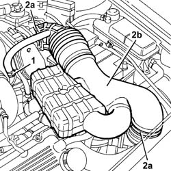
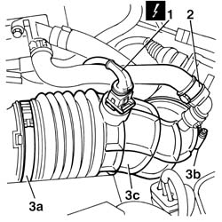
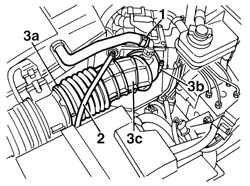

Procedures › 10 ENGINE › 1048 ENGINE AIR SUPPLY CIRCUIT › 1048A vacuum air circuit › 1048A34 sleeve(s) from flow meter to air supply capacity case - r + r 1048A34 sleeve(s) from flow meter to air supply capacity case - r + r
Path Procedures > 10 ENGINE > 1048 ENGINE AIR SUPPLY CIRCUIT > 1048A vacuum air circuit > 1048A34 sleeve(s) from flow meter to air supply capacity case - r + r
Kind repair procedure (removal / refitting; the operation number is the code)
Applies to engines: 1.6 TS , 1.8 TS, 2.5 V6, 3.2 V6; all production periods
Interactive page https://sloeber94.github.io/elrnDB-a156/en/#/3237529
Applies to: engines: 2.5 V6, 3.2 V6; all production periods
1. Disconnect the oil vapour recirculation pipe from the right cylinder
head.
2. Loosen the bands (2a) and remove the hoses from the flow meter
to the air chamber (2b).

Applies to: engines: 2.5 V6, 3.2 V6; all production periods
Fit the hoses from the flow meter to the
air chamber and fix them using the bands.
Connect the oil vapour recirculation pipe
to the right cylinder head.
Applies to: engines: 1.6 TS , 1.8 TS; all production periods
Disconnect the battery negative terminal.
Name
Connector
-
Battery
A1B
Applies to: engines: 1.6 TS ; all production periods
1. Disconnect the electrical connection from the intake air temperature
sensor.
Name
Connector
1
Air temperature sensor
K42
2. Release the band and remove the oil vapour recovery pipe from
the hose.
3. Loosen the bands (3a-3b) for the hose (3c) and remove it from
the engine compartment.

Applies to: engines: 1.6 TS ; all production periods
1. Release the band and remove the oil vapour recovery pipe from
the hose.
2. Release the accelerator cable from the plastic retaining band
at the side of the hose.
3. Loosen the bands (3a-3b) for the hose (3c) and remove it from
the engine compartment.

Applies to: engines: 1.6 TS , 1.8 TS; all production periods
Position the hose and restrict the fixing
bands.
Applies to: engines: 1.6 TS ; all production periods
Secure the accelerator cable to the plastic
fixing at the side of the hose.
Applies to: engines: 1.6 TS , 1.8 TS; all production periods
Place the oil vapour recovery pipe in its
housing on the hose in question.
Applies to: engines: 1.6 TS ; all production periods
Connect the electrical connection to the
intake air temperature sensor.
Connect the battery negative terminal.
Topics linked from this page (2) A1B Battery ( BATTERY NEGATIVE ) connector pinout (pin -> wire colour -> other end) · engines: 1.6 TS , 1.8 TS, 2.0 JTS, 2.5 V6, 3.2 V6, 1.9 JTD 8v , 1.9 JTD 16v, 2.0 JTS, 2.4 JTD 10v, 2.4 JTD 20v; all production periods K42 Air temperature sensor chapter (index of subtopics) · all engines; all production periods Topics that link to this page (38) 1004B12 power unit with manual gearbox - r+r for versions with a/c repair procedure (removal / refitting; the operation number is the code) · engines: 1.6 TS , 1.8 TS, 2.5 V6, 3.2 V6, 1.9 JTD 8v , 2.4 JTD 10v; all production periods 1016C10 cylinder head - r + r and replace gasket repair procedure (removal / refitting; the operation number is the code) · engines: 1.6 TS , 1.8 TS, 2.0 JTS, 1.9 JTD 8v , 1.9 JTD 16v, 2.0 JTS, 2.4 JTD 10v, 2.4 JTD 20v; all production periods 1020D38 flywheel side oil seal - replace repair procedure (removal / refitting; the operation number is the code) · engines: 1.6 TS , 1.8 TS, 2.0 JTS, 2.5 V6, 3.2 V6, 1.9 JTD 8v , 2.0 JTS, 2.4 JTD 10v; all production periods 1024B10 engine flywheel - r + r for versions with manual gearbox repair procedure (removal / refitting; the operation number is the code) · engines: 1.6 TS , 1.8 TS, 2.0 JTS, 2.5 V6, 3.2 V6, 1.9 JTD 8v , 1.9 JTD 16v, 2.0 JTS, 2.4 JTD 10v, 2.4 JTD 20v; all production periods 1048A10 air cleaner filtering element - replace repair procedure (removal / refitting; the operation number is the code) · engines: 1.6 TS , 1.8 TS, 2.0 JTS, 2.5 V6, 3.2 V6, 1.9 JTD 8v , 1.9 JTD 16v, 2.0 JTS, 2.4 JTD 10v, 2.4 JTD 20v; all production periods 1056B14 throttle case - r + r repair procedure (removal / refitting; the operation number is the code) · engines: 1.6 TS ; all production periods 1056B15 throttle body intergral with mds - r r repair procedure (removal / refitting; the operation number is the code) · engines: 1.6 TS , 1.8 TS; all production periods 1056B50 coolant temperature sensor - r + r repair procedure (removal / refitting; the operation number is the code) · engines: 1.6 TS , 1.8 TS, 2.5 V6, 3.2 V6; all production periods 1056B51 cam angle sensor r + r repair procedure (removal / refitting; the operation number is the code) · engines: 1.6 TS , 1.8 TS, 2.5 V6, 3.2 V6; all production periods 1068A31 accelerator cable - r r for rh drive versions repair procedure (removal / refitting; the operation number is the code) · engines: 1.6 TS , 1.8 TS; all production periods 1072B50 sleeves connecting air capacity box to inlet manifold is - r+r repair procedure (removal / refitting; the operation number is the code) · engines: 1.6 TS , 2.5 V6, 3.2 V6, 1.9 JTD 8v , 2.4 JTD 10v; all production periods 1072C34 r/h exhaust manifold - r + r and replace seal repair procedure (removal / refitting; the operation number is the code) · engines: 2.5 V6; all production periods 1072D10 modular inlet manifold - r+r repair procedure (removal / refitting; the operation number is the code) · engines: 1.8 TS, 2.0 JTS, 2.0 JTS; all production periods 1072D14 sleeves joining long air intake ducts to manifold case - replace with modular manifold removed repair procedure (removal / refitting; the operation number is the code) · engines: 1.8 TS; all production periods 1080E24 fuel vapour by-pass valve/solenoid - r + r repair procedure (removal / refitting; the operation number is the code) · engines: 1.6 TS , 1.8 TS, 2.5 V6, 3.2 V6; all production periods 1088C40 thermostat- r + r repair procedure (removal / refitting; the operation number is the code) · engines: 1.6 TS , 1.8 TS, 2.0 JTS, 2.5 V6, 1.9 JTD 8v , 1.9 JTD 16v, 2.0 JTS, 2.4 JTD 10v, 2.4 JTD 20v; all production periods 1088E35 combined sender unit for coolant temperature gauge and warninglight r r repair procedure (removal / refitting; the operation number is the code) · engines: 1.6 TS , 1.8 TS, 2.5 V6, 1.9 JTD 8v , 2.4 JTD 10v; all production periods 1820B21 (Pump) - MASTER CYLINER R.R. for right hand drive versions repair procedure (removal / refitting; the operation number is the code) · engines: 1.6 TS , 1.8 TS, 2.5 V6, 3.2 V6, 2.4 JTD 10v; all production periods 1820B43 RIGID PIPE from clutch reservoir to (pump) - master cylinder R.R. for right hand drive versions repair procedure (removal / refitting; the operation number is the code) · engines: 1.6 TS , 1.8 TS, 3.2 V6; all production periods 1820B47 rigid pipe from master cylinder (pump) to vibration damper - r r for right hand drive versions repair procedure (removal / refitting; the operation number is the code) · engines: 1.6 TS , 1.8 TS, 3.2 V6; all production periods 2130B36 automatic tranmission valve cover r r repair procedure (removal / refitting; the operation number is the code) · engines: 2.5 V6; all production periods 2130B40 gear selection solenoid unit - r r repair procedure (removal / refitting; the operation number is the code) · engines: 2.5 V6; all production periods 2135B58 electronic automatic transmission system wiring - r r repair procedure (removal / refitting; the operation number is the code) · engines: 2.5 V6; all production periods 3330C38 FLEXIBLE PIPE - FRONT section - from brake fluid RESERVOIR to (pump) - MASTER CYLINDER R.R. for right hand drive versions repair procedure (removal / refitting; the operation number is the code) · engines: 1.6 TS , 1.8 TS, 3.2 V6; all production periods 3330C39 FLEXIBLE PIPE - REAR section - from brake fluid RESERVOIR to (pump) - MASTER CYLINDER R.R. on right hand drive versions repair procedure (removal / refitting; the operation number is the code) · engines: 1.6 TS , 1.8 TS, 3.2 V6; all production periods 3330D11 brake servo - r r including seperation from master cylinder - facia lining removed for rhd version repair procedure (removal / refitting; the operation number is the code) · engines: 1.6 TS , 1.8 TS, 2.5 V6, 2.4 JTD 10v; all production periods 3330D20 one-way valve for brake servo - r+r repair procedure (removal / refitting; the operation number is the code) · engines: 1.6 TS , 1.8 TS, 2.5 V6, 1.9 JTD 8v , 2.4 JTD 10v; all production periods 3330D24 vacuum pipe for brake servo - r+r repair procedure (removal / refitting; the operation number is the code) · all engines; all production periods 3330D27 vacuum pipe complete with one-way valves - r r for right hand drive versions repair procedure (removal / refitting; the operation number is the code) · engines: 1.6 TS , 1.8 TS; all production periods 3340B53 rigid pipe (one) from master cylinder (pump) to abs hydraulic control unit - r r for rhd versions repair procedure (removal / refitting; the operation number is the code) · engines: 1.6 TS , 1.8 TS, 3.2 V6, 2.4 JTD 10v; all production periods 4130B74 return pipe between power steering case and duplex pipes r r repair procedure (removal / refitting; the operation number is the code) · engines: 1.6 TS , 1.8 TS, 2.0 JTS, 2.5 V6, 1.9 JTD 8v , 2.0 JTS, 2.4 JTD 10v, 2.4 JTD 20v; all production periods 4130B80 return pipe between duplex pipe and fluid resevior r r repair procedure (removal / refitting; the operation number is the code) · engines: 2.5 V6, 1.9 JTD 8v , 2.4 JTD 10v, 2.4 JTD 20v; all production periods 4130B82 return pipe between rigid intermediate return pipe to fluid resevior r r repair procedure (removal / refitting; the operation number is the code) · engines: 2.5 V6, 3.2 V6, 1.9 JTD 8v , 2.4 JTD 10v; all production periods 5010A12 engine/heater line - r r repair procedure (removal / refitting; the operation number is the code) · engines: 1.6 TS , 1.8 TS, 2.5 V6, 1.9 JTD 8v , 2.4 JTD 10v; all production periods 5010A16 heater/engine line - r r repair procedure (removal / refitting; the operation number is the code) · engines: 1.6 TS , 1.8 TS, 2.5 V6, 1.9 JTD 8v , 2.4 JTD 10v; all production periods 5520B12 starter motor - r+r for versions with a/c repair procedure (removal / refitting; the operation number is the code) · engines: 2.5 V6, 3.2 V6, 2.4 JTD 10v; all production periods 5530B10 battery - r+r repair procedure (removal / refitting; the operation number is the code) · all engines; all production periods 5530B52 Battery DRIP TRAY/SUPPORT - R.R. repair procedure (removal / refitting; the operation number is the code) · engines: 1.6 TS , 1.8 TS, 2.0 JTS, 2.5 V6, 1.9 JTD 8v , 1.9 JTD 16v, 2.0 JTS, 2.4 JTD 10v, 2.4 JTD 20v; all production periods
 Removing
Removing Refitting
Refitting